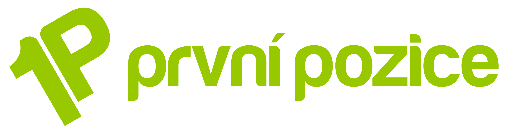

Jak to běží každý den

Import má 8 kroků
V každém by jinak seděl
člověk s tabulkou.
Stažení feedů 2× denně
Síto 32 000 → 2 700
Varianty → produkty
Sklad + dodavatel
Ceny s hlídáním zlata
Popisy a SEO
700 kontrol
FTP za 30 s
@1pprvnipozice